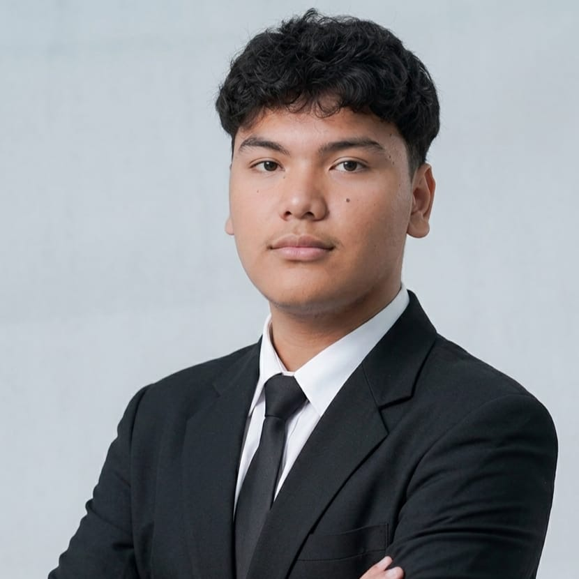

Penetration Testing
Identifikasi kerentanan, eksploitasi keamanan sistem, dan analisis celah keamanan.
Halo, saya
Cyber Security Specialist dan Penetration Tester yang suka mencari celah sebelum orang lain menemukannya.

Saya adalah seorang mahasiswa dan penggiat keamanan siber dengan minat dan fokus pada bidang Penetration Testing (Pentest).
Saya memiliki pengalaman dalam memecahkan tantangan Capture The Flag (CTF) berjenis jeopardy pada kompetisi-kompetisi. Untuk memperkuat fondasi keahlian teknis, saya secara aktif mengikuti program pelatihan dari lembaga terkemuka seperti CODEPOLITAN dan dibimbing.id.
Identifikasi kerentanan, eksploitasi keamanan sistem, dan analisis celah keamanan.
Pwntools untuk eksploitasi buffer overflow, SageMath untuk lattice reduction dan dekripsi RSA, serta Netcat.
Familiar dengan Python, C/C++, SQL, dan lingkungan Linux/WSL untuk mendukung otomasi pengujian keamanan.
Analisis forensik, kriptografi, dan reverse engineering pada berbagai file dan script kompetisi.
JagoanSiber by CODEPOLITAN
Certificate of Participation, dibimbing.id
Terbuka untuk diskusi, kolaborasi CTF, atau peluang magang di bidang keamanan siber.